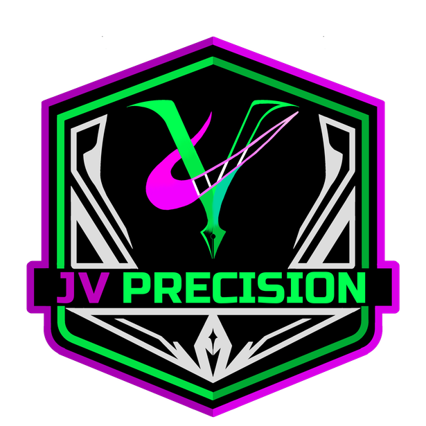
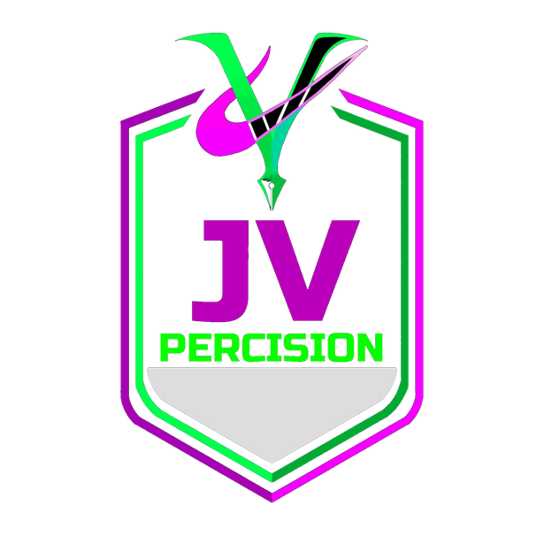

MY
PORTFOLIO
Aspiring IT professional, TESDA CSS NC II passer, and creative digital designer with skills in computer assembly, operating system installation, hardware/software troubleshooting, network setup, and programming in Python, Java, HTML, and SQL.
MY SKILLS (ABOUT) SECTION
// CORE CREATIVE ATTRIBUTES & METHODOLOGY
ASPIRING IT PROFESSIONAL & DIGITAL DESIGNER
I am Joaquin, a creative and detail-oriented aspiring IT professional with a passion for drawing and digital design, a TESDA Computer Systems Servicing (CSS) NC II passer with skills in computer assembly, operating system installation, hardware and software troubleshooting, network and server setup, and computer maintenance and repair, along with basic knowledge of Python, Java, HTML, and SQL.
Fusing hands-on technical workstation mastery with sharp artistic vision to build reliable systems, high-performance IT infrastructure, and visually striking digital experiences.
PROJECTS (PORTFOLIO)
EVALUATION (SKILLS & CONTACT) SECTION
// COMBAT READINESS RADAR & DIRECT TRANSMISSIONTEAM UP?!
Looking for a skilled IT professional or creative digital designer for computer systems, network infrastructure, software development, or visual design? Transmit your message below.